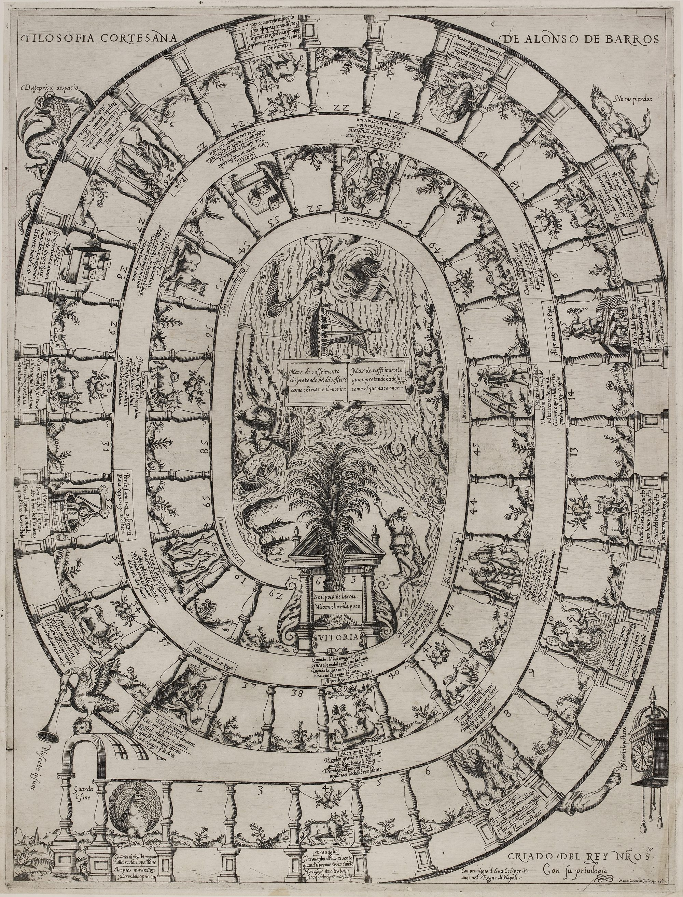

Playing at a table
This page needs no JavaScript. It is the plain version of the edition’s Play page, where the game is played on screen, which does, and gives the rules and the board for a game with real dice.
Barros’s game was played on a printed sheet spread on a table, with dice, a marker for each player and stakes paid into a pot, while the little book explained each square. To play it that way, print the board below or show it on a screen, and use two dice (this edition’s choice; see “How many dice” below), a different marker for each player, and counters or coins for the stakes. The rules follow, with the choices this edition makes where the sources leave gaps, and then a table of what each square does.

How the game is played
What we have to go on
Three texts give rules, and they differ. G and C end with a short section of rules, which Lucero finds laconic and in agreement on the concrete rules (Lucero 2019a, 203 n. 13). M replaces it with a longer “Declaración del juego y orden de jugarle”, with a worked example for three players (Lucero Sánchez 2016, 189–90). Lucero thinks that se puede atribuir con alguna seguridad a la misma mano el prólogo «Al lector» y la «Declaración del juego y orden de jugarle»
(Lucero Sánchez 2016, 183) (the prologue “To the reader” and the “Declaration of the game” can be attributed with some confidence to the same hand), and that Barros's hand is behind the worked example and most of M's additions (Lucero Sánchez 2016, 183, 191). The prose sections of all three also state rules square by square (Barros 1588, pp. 21–46). The Naples board adds short Italian labels (board). G is known to us only through Lucero's quotations and tables (Lucero Sánchez 2016, 183–90; Lucero 2019a, 204).
Rules common to all three
G's wording is quoted only for its first rule and for Poverty and the overshoot; Lucero says the rest agrees with C, which follows G with very slight variants (Lucero 2019a, 203 n. 13; Lucero Sánchez 2016, 180 n. 43, 189).
- Move by the points thrown; if two land on one square, the newcomer stays and the first takes the square the newcomer left (Barros 1588, p. 60; Lucero Sánchez 2016, 189). Barros calls this “el vso de la competencia” (the custom of rivalry) (Barros 1588, p. 22).
- Labor (the oxen, 4, 12, 17, 23, 30, 34, 41, 48, 57): move on again as many squares as the throw that brought you there (Barros 1588, p. 60; board) (Lucero 2020, 124).
- Pass of Hope (15): go on to the Favorite (26), paying one stake “for each” (M: “for each of the two”) (Barros 1588, pp. 60–61; Barros 1587, Madrigal ed., PDF 12). Board: 15 “Al priuato ·n[umer]º· 26. Paga”; 26 “Paga.” (board).
- Well of Oblivion (32): miss a turn, pay one stake to each player and two to the pot “para sogas” (for ropes) (Barros 1588, p. 61). Board: “Per le fune ·1· et ·2· fermesi / Para·sogas ·1· y ·2· estese” (board).
- What Will They Say? (36) to the Dice (28); False Friendship (39) to the Prodigal (7); Change of Ministers (43) to Flattery (10); Death of the Patron (46): start the game again; House of Fortune (51): throw twice; “I Thought…” (55) to Diligence (20) (Barros 1588, pp. 61–62). Board labels on 36, 39, 43, 46 and 55 add “Paga”; 51 reads “Giuoca ·2· uolte ·” (board).
- Poverty to the Dice at 53, with alms (Barros 1588, p. 62; Lucero 2019a, 204). Board: “Limosina et alla sorte·53” (board).
- Overshoot the palm: go back the excess, paying one stake “por cada vez que boluiere atras de qualquier suerte que sea” (each time one goes back, of whatever kind) (Barros 1588, pp. 62–63; Lucero 2019a, 204).
G (Madrid, 1587, first edition)
Headed “Esto se juega en esta forma”; its first rule speaks of “el dado”, the die (Lucero Sánchez 2016, 189). Poverty stands at 59 (Lucero Sánchez 2016, 180 n. 43, 189; Lucero 2019a, 204). The poor player is given alms (“danle limosna”), with no amount (Lucero 2019a, 204). G has no sentence on how the game is won; its rules end at the overshoot clause, set tapering like the foot of a goblet (configuración en pie de copa
(Lucero Sánchez 2016, 189)), and “Deo gratias” (Lucero Sánchez 2016, 189–90).
M (Madrid, 1587, Madrigal)
M's Declaración adds (Barros 1587, Madrigal ed., PDF 11–12; Ciompi & Seville, giochidelloca.it; Martínez Millán 1996, 470–71):
- the sheet is spread on a table or pasted to it;
- each player first puts one stake, of whatever value is agreed, into the pot;
- play is with two dice marked on every face from one to six, or with six arenillas marked on one face;
- two or more may play, as many as wish; each has a distinct marker (a ring, a two-real coin, a doubloon in the example) and plays in turn;
- a player displaced at the very start is left without a square;
- the poor player receives one stake from each other player, pays nothing for going back, and is the one exception to the overshoot charge;
- whoever lands exactly on 63, the palm, takes the whole pot, both the opening stakes and everything paid in during play.
The worked example applies these rules. Pedro, on 6, throws 9 to reach 15, reads “Al privado” above it, pays one stake and moves to 26, paying another. Rodrigo, on 5, throws 10, reaches 15, moves to 26, finds Pedro there and takes the square, paying two stakes. Pedro goes back to 5, where Rodrigo had been, paying one stake “porque volvió atrás” (because he went back) (Barros 1587, Madrigal ed., PDF 12). The example ends by saying the same holds for the other squares and for more players (Barros 1587, Madrigal ed., PDF 12).
C (Naples, 1588, with Cartaro's board)
Headed “EL YVEGO SE juega en esta forma”, it opens “EL Que lança el dado” (whoever throws the die) (Barros 1588, p. 60). Poverty is at 60, as in M and on the board (Barros 1588, p. 62; board). It gives alms without an amount, like G (Barros 1588, p. 62). It lacks M's rule for the start, M's exception for Poverty, and any rule for winning; the palm is never numbered in the text (Barros 1588, pp. 60–63). On the board the palm's own motto, “Ne il poco ne lassai · / Ni lo mucho·ni la poco” (neither too much nor too little), states the exact-throw rule, as Barros explains in the prose (board) (Martínez Millán 1996, 481).
What this digital version has to decide
The sources leave gaps. For each, the options, what the sources say, and the default we propose.
- How many dice in G and C. G and C say “el dado” (Lucero Sánchez 2016, 189; Barros 1588, p. 60). M says two dice, or six arenillas (Barros 1587, Madrigal ed., PDF 11). M's own last rule also says “con los puntos del dado” while using two dice, so the singular can be generic (our observation) (Barros 1587, Madrigal ed., PDF 12). The 1585 Liaño letter describes the goose game at court as played with two dice (Infantes 2010, 135). Barros's Fortune rule, that two throws from 51 can win, fits two dice, with 12 the most points in one throw (Lucero 2020, 125; Bidwell-Steiner 2024, 203). The Dice squares picture three dice (1, 2, 3 at 28; 4, 4, 3 at 53), and Lucero notes that the goose game's dice squares show two (Lucero 2020, 124; Ciompi & Seville, giochidelloca.it; board); no text makes the picture a rule for play. Options: one die; two dice. This edition's choice: two dice in all three versions, with one die available as a variant for G and C. The arenillas (also harinillas) are six dice marked on one face only (Real Academia Española n.d.; Ciompi & Seville, giochidelloca.it); Zollinger identifies them with the Italian farinacci and the French jarinets, the dice of the later game Cloche et Marteau (Ciompi & Seville, giochidelloca.it). No source we cite says how a throw of them was counted, so we do not implement them.
- The alms in G and C. Both say only “danle limosna” (Lucero 2019a, 204; Barros 1588, p. 62). M specifies one stake from each other player (Barros 1587, Madrigal ed., PDF 12). Wilson, Martínez Millán and Rodríguez Mansilla, all reading M, have the others give to the poor player (Wilson 1968, 368; Martínez Millán 1996, 470, 481; Rodríguez Mansilla 2019, 190). Bidwell-Steiner, citing Lucero's edition, has the poor player give alms, probably from the moral text's ambiguous “MAndanle dar limosna” (Bidwell-Steiner 2024, 204; Barros 1588, p. 46). M settles it for M. Options for G and C: one stake from each player (M's rule); one stake from the pot; no payment. This edition's choice: M's rule.
- Which backward moves cost a stake. All three versions charge one stake for going back “de cualquier suerte que sea” (Barros 1588, pp. 62–63). The phrase can mean only the overshoot at the end, or any throw that sends a player back. M's example charges the displaced player one stake for going back (Barros 1587, Madrigal ed., PDF 12), and M exempts the player who lands on Poverty from paying; because the exemption stands inside the overshoot rule, it may cover only a count-back that ends on Poverty, or also the move from Poverty to 53 (our observation) (Barros 1587, Madrigal ed., PDF 12). The board prints “Paga” on every square that sends a player back except Poverty (36, 39, 43, 46, 55; not 60) but not on Fortune, and prints it on the forward move 15–26 (board) (for the label at 26 itself, see “Landing directly on the Favorite”, below); we read these labels as the same general rule, not an extra charge, because M's Declaración lists no separate payment for those squares (our observation) (Barros 1587, Madrigal ed., PDF 12). Options: (a) charge only the overshoot; (b) charge every backward move: overshoot, displacement, and the squares that send back; (c) as (b) plus a second charge on the labeled squares. Zollinger and Marcos Méndez Filesi read the clause differently again, as one stake for each square counted back; in Zollinger's words,
payer chaque fois que le joueur retourne (donc pour chaque case)
(pay each time the player goes back, so for each square) (Ciompi & Seville, giochidelloca.it). The text says each time, not each square, and we do not offer this reading (our observation) (Barros 1588, pp. 62–63). This edition's choice: (b) in all versions; in G and C, whether the poor player also pays for the move to 53 is not stated; we exempt that player, as M does. This reading of M's exemption, and its extension to G and C, is the edition's own (DECISION); squares 36 and 53 say so too. - A special square sends you onto an occupied square. For a forward jump, M's example settles it: Rodrigo, sent from 15 to 26, takes Pedro's square, and Pedro goes back to the square Rodrigo had left before his throw, paying a stake (Barros 1587, Madrigal ed., PDF 12). For a backward move (39 to 7, 43 to 10, 36 to 28, 55 to 20, 60 to 53, 46 to the start) the sources are silent. Options: (a) the general rule, with the displaced player moving to the square the mover occupied before the throw, which can move the displaced player forward; (b) the displaced player moves to the square the mover was sent from; (c) no displacement on backward moves, and both share the square. This edition's choice: (a), which follows the wording of the rule and M's example; we flag it in play when it moves a player forward. The same choice applies when a labor move ends on an occupied square.
- Starting position. M: a player displaced at the start “se ha de quedar sin casa”, because the newcomer had no square before (Barros 1587, Madrigal ed., PDF 12). Players therefore begin off the track, before the gate (our reading) (Barros 1587, Madrigal ed., PDF 12). The gate itself carries no number; square 1 is the peacock (board). C lacks M's clause (Barros 1588, p. 60). This edition's choice: all markers start off the board at 0, in front of the gate; a player displaced from a square reached by an opening throw returns to 0; the Death of the Patron returns a player to 0.
- Purses. Only M speaks of money at the start: one stake of an agreed value (Barros 1587, Madrigal ed., PDF 11). No source we cite gives a purse, a limit on debt, or what happens when a player cannot pay. Lucero observes that the game's slow progress limits its money consequences (Lucero 2020, 126). Options: an unlimited purse, with a running balance that may go negative; a fixed purse, with a bankrupt player out of the game; a fixed purse, with a bankrupt player continuing without paying. This edition's choice: each player starts with 20 stakes and may go negative; the balance is shown, and the winner takes the pot.
Further points the sources leave open:
- Fortune (51), “juega dos veces”. Two readings: one more throw, or two more throws. C's prose says the player who reaches Fortune plays twice, “estando el juego de manera, que co[n] dos suertes se gana la polla, y con las demas se pierde, o se dilata” (the game being so arranged that with two throws the pot is won, and with the others it is lost or put off) (Barros 1588, p. 41). Wilson, unsure of the Spanish, suggested that two throws totaling exactly twelve win (Wilson 1968, 368). Lucero reads it as one extra throw, placed at 51 so that a throw of twelve wins (Lucero 2020, 125); Collar de Cáceres reads the board's “Giuoca ·2· uolte ·” as two additional throws (Collar de Cáceres 2009, 96). Our translator notes that on Cartaro's board exactly two throws win from 51: twelve, straight to the palm, and six, to the oxen at 57 and on by six more to 63 (our observation) (Barros 1588, p. 41; board). That reading makes “dos suertes” two winning throws, not two throws in a row. This edition's choice: one extra throw at once; two extra throws can be chosen in the setup.
- Poverty in G. G puts Poverty at 59 while Cartaro's board shows it at 60 (Lucero 2019a, 204; board). Under G the game treats 59 as Poverty and 60 as a plain square, and marks the change on the board image.
- Labor in G. G had eight Labor verses of its own, four of them not in M, and Lucero's thesis infers that G's Labor squares were spread more evenly (Lucero Sánchez 2016, 187–88; Lucero Sánchez 2020, 20). G's positions are not known to us; under G we keep Cartaro's Labor squares and show G's verses in G's printed order.
- The Well. C says the player pays “auiendo estado sin jugar vna mano” (having been a round without playing), which can mean that the player pays after missing their turn or on arrival (Barros 1588, p. 61). This edition's choice: the player pays on arrival and misses their next turn.
- Turn order. M: “por su orden”, and in the example Pedro plays first (Barros 1587, Madrigal ed., PDF 11). The rule that the youngest starts, given on the La Bella Donna blog, is not in the sources we cite (Fleur-de-Gigi 2013b).
- Special squares reached by a rebound or a transfer. No source we cite says whether a square reached by counting back from 63, or by a transfer, takes effect. This edition's choice: a square reached by rebound takes effect; a square reached by transfer does not (so a player sent from 15 to 26 pays the Hope rule's two stakes and not a third for the label at 26; the other destinations, 7, 10, 20, 28 and 53, carry no rule of their own).
- Landing directly on the Favorite (26). The board writes “Paga.” at 26 (board). The rules mention a stake there only in the Pass of Hope clause and say nothing of a player who lands on 26 directly (Barros 1588, pp. 60–61; Barros 1587, Madrigal ed., PDF 12). Collar de Cáceres reads the board's label as a charge on every arrival, whether the player arrives directly, which he glosses as
vía del trabajo
(Collar de Cáceres 2009, 94) (by way of Labor), or from square 15 (Collar de Cáceres 2009, 94). DECISION: we follow the board. A player who lands on 26 directly, by a throw or by a Labor move, pays one stake to the pot; a player sent there from the Pass of Hope pays the two stakes of the Hope rule, one at 15 and one at 26, and no third. - Endless Labor. If a Labor move reached by counting back from the palm would lead back to the same oxen (a throw of twelve from 57 returns to 57), the player stops on the oxen. The sources do not foresee the case; this is our decision.
- Counting back onto the oxen. Because a square reached by counting back takes effect, a player who counts back onto the oxen at 57 moves on again by the same throw, and may pass the palm a second time, count back again and pay a second stake: from 58, a throw of eleven runs on to 63, back to 57, on again past the palm and back to 58, for two stakes. DECISION: we keep this double rebound through 57, since it follows from the two rules as written.
- Counting back onto Poverty. In M the exemption for the poor player stands inside the overshoot rule:
salvo, el que da en la casa de la pobreza, que no solo no paga, sino que todos le dan cada uno un tanto
(except whoever lands on the house of Poverty, who not only does not pay, but everyone gives him a stake each) (Barros 1587, Madrigal ed., PDF 12). M does not say whether only a landing by counting back is meant; the game reads it as covering both that and the move from Poverty, and so charges no stake for a count-back that ends on Poverty (59 under G, 60 otherwise), and none for the move from Poverty to 53; the other players pay their alms as usual. Neither G nor C has M's exemption; applying it to them is our DECISION (see item 3 above). - Displaced from the Well. If a newcomer lands in the Well (32) while another player is in it, the general rule sends the first player to the square the newcomer left. The sources do not say whether that player still misses a round. DECISION: the displaced player keeps the lost round. Barros's Well costs a lost round and payment for the ropes; release because another player has fallen in is the goose-game rule, which Collar de Cáceres says Barros did not keep (Collar de Cáceres 2009, 95).
- Fortune and the Well. With the setup option of two extra throws at Fortune, a player whose extra throw ends in the Well loses any extra throw still owed. The sources do not foresee the case. DECISION.
- Displacement. A displaced player sent backward pays one stake, as Pedro does in M's example, and so does a player sent back before the gate at the start. A player displaced forward pays nothing. The square a displaced player is moved to does not act, even if it is the Well or Fortune (Barros 1587, Madrigal ed., PDF 12). DECISION, following the wording of the general rule and M's example.
- What this edition implements. Two dice (one die available); a stake for every move back, including being displaced backward (the overshoot only, as an option); no stake for a count-back that ends on Poverty, and none for the move from Poverty to 53; the poor player receives one stake from each other player, in all three versions; one stake for landing on the Favorite (26) directly, and two, as the Hope rule says, for coming to it from 15; a player displaced from the Well still misses the round; players start before the gate, and a player displaced from a square reached by an opening throw returns there; each purse holds 20 stakes and may go below zero; a square reached by counting back from 63 takes effect, even when that sends the player past the palm again, and a square reached by being sent there does not; with two extra throws at Fortune, a fall into the Well cancels the throw still owed; the winner takes the whole pot.
What each square does
The rules of the Naples edition and its board, with this edition’s choices where the sources are silent. In the first edition (Madrid 1587, widow of Alonso Gómez) Poverty stands on 59, and 60 is plain. Every other square is plain. On a plain square: Stay here. If someone lands on you, you take the square they have just left, paying one stake if that square is behind you.
| Square | Name | What happens | On the board |
|---|---|---|---|
| gate | The Entrance: the Swan above the Gate | Every counter starts outside this gate. Your first throw counts squares from here into the track. | |
| 1 | The Gate of Opinion: the Peacock | No penalty or bonus. The first square of the track, which every petitioner's career passes. | |
| 4 | Labor | Don't stop: move on again by the number you just threw (and again, if you land on oxen once more). | |
| 7 | The Prodigal | No penalty here. Players sent back from False Friendship (39) arrive here after paying one stake. | |
| 10 | Flattery | No penalty here. Players sent back from the Change of Ministers (43) arrive here after paying one stake. | |
| 12 | Labor | Don't stop: move on again by the number you just threw (and again, if you land on oxen once more). | |
| 15 | The Pass of Hope | Don't stop here: pay one stake, move on to 26, the Favorite, and pay one more there. | Al priuato ·n[umer]º· 26. Paga — To the Favorite, no. 26. Pay. |
| 17 | Labor | Don't stop: move on again by the number you just threw (and again, if you land on oxen once more). | |
| 20 | Diligence | No penalty here. Players sent back from “I Thought…” (55) arrive here after paying one stake, to start their diligence again. | |
| 23 | Labor | Don't stop: move on again by the number you just threw (and again, if you land on oxen once more). | |
| 26 | The Favorite | Pay one stake, as the board's label says (the edition's decision). A player sent on from the Pass of Hope (15) pays here too, after paying at 15. | Paga. — Pay. |
| 28 | The Dice | No effect if you land here. Players from What Will They Say? (36) are sent back here. | |
| 30 | Labor | Don't stop: move on again by the number you just threw (and again, if you land on oxen once more). | |
| 32 | The Well of Oblivion | Miss one round; pay one stake to each player and two to the pot, for the ropes. If someone lands on you here, you take their old square but still miss the round (the edition's decision). | Per le fune ·1· et ·2· fermesi / Para·sogas ·1· y ·2· estese — For the ropes, 1 and 2; let him stop. / For ropes, 1 and 2; let him stay. |
| 34 | Labor | Don't stop: move on again by the number you just threw (and again, if you land on oxen once more). | |
| 36 | What Will They Say? | Go back to 28, the Dice, and pay one stake. | Alla sorte ·n·° 28 ·Paga — To the Throw, no. 28. Pay. |
| 39 | False Friendship | Go back to 7, the Prodigal, and pay one stake. | Al prodigo ·n·° 7 ·Paga — To the Prodigal, no. 7. Pay. |
| 41 | Labor | Don't stop: move on again by the number you just threw (and again, if you land on oxen once more). | |
| 43 | The Change of Ministers | Go back to 10, Flattery, and pay one stake. | Alla adulatione·n·° 10 ·Paga — To Flattery, no. 10. Pay. |
| 46 | The Death of the Patron | Your patron has died: go back to the start and begin again, paying one stake. | In camincia de nuouo ·Paga· — He begins anew. Pay. |
| 48 | Labor | Don't stop: move on again by the number you just threw (and again, if you land on oxen once more). | |
| 51 | The House of Fortune | Fortune smiles: throw the dice again (you play twice). | Giuoca ·2· uolte · — Plays twice. |
| 53 | The Dice | No effect here. Players sent from Poverty (60; 59 in the first edition) arrive with one stake of alms from each player, and pay nothing for going back (our reading of M). | |
| 55 | “I Thought…” | Go back to 20, Diligence, and pay one stake. | Alla diligentia n·° 20 ·Paga — To Diligence, no. 20. Pay. |
| 57 | Labor | Don't stop: move on again by the number you just threw (and again, if you land on oxen once more). | |
| 60 | Poverty | Go back to 53, the Dice; each other player gives you one stake as alms. | Limosina et alla sorte·53 — Alms, and to the Throw, 53. |
| 63 | Victory, the Palm | Reach 63 by exact count to win the pot. Overshoot counts back and costs one stake, except a count-back onto Poverty (Madrigal's exemption, applied here to all three editions). | Ne il poco ne lassai · / Ni lo mucho·ni la poco — Neither the little nor the much. / Neither the much nor the little. |